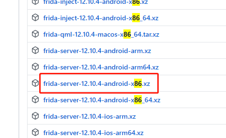
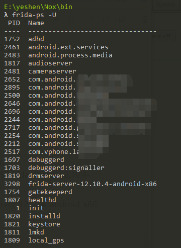
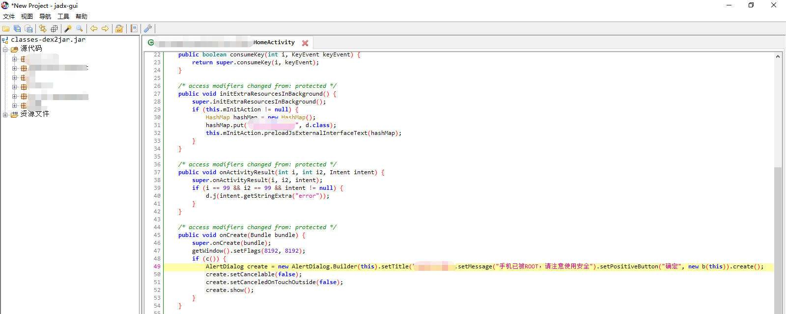
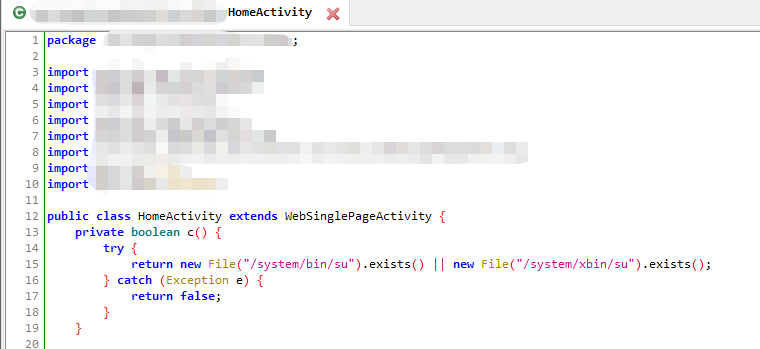
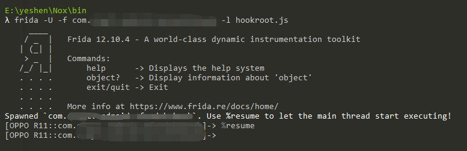

有些app安装到已root的手机上会提示手机被root，不能使用🙄那还叫人怎么玩啊，摔

然后通过各种套娃别人的方法，来绕过一下
| 环境 | 版本 |
|---|---|
| win | 10 |
| android | 夜神模拟器安卓7 |
| frida | 12.10.4 |
Frida是一款基于python + javascript 的hook框架，适用于android/ios/linux/win/osx等平台。Frida的动态代码执行功能，主要是在它的核心引擎Gum中用C语言来实现的。（抄的
用pip就可以安装frida
λ pip install frida
但是我没成功，可以升级pip试一下，也可以尝试
λ pip install frida-tools
但是我没成功，最终我在管理员权限下，成功了😑
λ frida --version
12.10.4
就说明你拥有了frida💥
首先选择合适的frida-server，怎么选呢？我们可以用adb查看我们的手机是什么cpu版本
用adb连接手机，我这里是夜神模拟器，进入模拟器安装所在文件夹
λ nox_adb.exe connect 127.0.0.1:62026
already connected to 127.0.0.1:62026
查看是否连接
λ nox_adb.exe devices
List of devices attached
127.0.0.1:62026 device
进入某台手机：
λ adb -s 127.0.0.1:62026 shell
查看cpu版本：
R11:/ # getprop ro.product.cpu.abi
x86
是x86，那就选择对应的如图下载

解压后将文件放入手机
λ adb push frida-server-12.10.4-android-x86 /data/local/tmp
[100%] /data/local/tmp/frida-server-12.10.4-android-x86
设置端口转发到pc端
λ adb forward tcp:27042 tcp:27042
λ adb forward tcp:27043 tcp:27043
再次进入手机，修改frida-server权限，启动frida
λ adb shell
R11:/ # cd /data/local/tmp
R11:/data/local/tmp # ls
frida-server-12.10.4-android-x86
R11:/data/local/tmp # chmod 755 frida-server-12.10.4-android-x86
R11:/data/local/tmp # ./frida-server-12.10.4-android-x86
再打开另一个cmd：
λ frida-ps -U
如果出现Android的进程，则代表安装成功。

我们遇到的问题是app刚启动检测到root就关掉，所以我们要寻找是在哪检测到root的，这是问题的切入点
二话不说掏出apk反编译（如果你手里的apk因为被加固了等情况无法反编译，出门左转再见
把apk的后缀改为zip，进行解压，解压后打开找到dex后缀的文件

用dex2jar反编译
λ d2j-dex2jar.bat classes.dex
会生成一个jar文件，这里是classes-dex2jar.jar
然后用jadx-gui打开

全局搜索手机已被ROOT，请注意使用安全，我们发现确有此句

这里的逻辑就是，如果c，那就弹框这句话，那么c的意思？大概就是判断手机是否被root了，我们发现确有此c

如果存在这两个文件，说明手机被root了，不存在就返回false
hookroot.js：
Java.perform(function x() {
var application = Java.use("android.app.Application");
application.attach.overload('android.content.Context').implementation = function (context) {
var result = this.attach(context);
var classloader = context.getClassLoader();
Java.classFactory.loader = classloader;
var funk = Java.classFactory.use("com.xxx.xxx.xxx.xxx.HomeActivity");
funk.c.overload().implementation = function () {
return false;
}
}
});
com.xxx.xxx.xxx.xxx.HomeActivity是我们那个函数所在的class
funk.c是我们定位到识别root，让他返回false
先打开app，界面还是手机已被ROOT，请注意使用安全
此时，frida启动hook
λ frida -U -f com.xxx.xxx.xxx -l hookroot.js
com.xxx.xxx.xxx是我们的apk包名
看到frida启动，app关闭，提示
Use %resume to let the main thread start executing!
然后根据提示输入
%resume

app启动后就没有root提示，可以正常登录了👶
https://www.jianshu.com/p/c349471bdef7